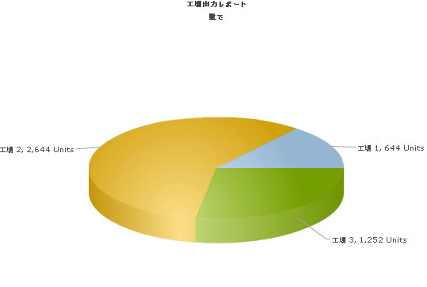

In this section, we will show you how to use FusionCharts XT and JSP to plot charts from data containing UTF-8 characters.
Using the Data URL method we will do the following:
- Create a column3D chart to show the Monthly Sales with Japanese data from an XML file.
- Create a pie chart to show "Production by Factory" data from the database containing Japanese text.
Using the Data String method, we will do the following:
- Create a Column2D chart containing multi-lingual text with the xml present in the jsp page itself.
We will use Japanese text in this example but you could extend it to any left-to-right language by applying the same procedure.
Before you proceed with the contents in this page, we recommend you to go through the Basic Examples and Plotting from Database Example sections, as we will directly use a lot of concepts defined in those sections.
The code examples contained in this page are present
in Download Package > Code > JSP > UTF8Examples
folder.
The database scripts are present in Download
Package > Code > JSP > DB.
While using FusionCharts XT with UTF-8 characters, please remember the following:
- BOM has to present in the XML given as input to the chart in the Data URL method
- The Data String method can also be used for multi-lingual text
In our code, we have used the charts contained in Download Package > Code > FusionCharts folder. When you run your samples, you need to make sure that the SWF files are in proper location. Also the JapaneseData.xml file used in JapaneseXMLFileExample.jsp is present in the Download Package > Code > JSP > UTF8Example > Data folder.
Let's now start building our first example. In this example, we will create a "Monthly Unit Sales" chart using dataURL method. For a start, we will manually code our XML data in a physical XML document JapaneseData.xml, save it with UTF-8 encoding and then utilize it for our chart.
Let's first have a look at the XML Data document:
<chart caption='月間販売' xAxisName='月' yAxisName='Units' decimals='0' formatNumberScale='0'>
<set label='一月' value='462'/>
<set label='二月' value='857'/>
<set label='三月' value='671'/>
<set label='四月' value='494'/>
<set label='五月' value='761'/>
<set label='六月' value='960'/>
<set label='七月' value='629'/>
<set label='八月' value='622'/>
<set label='九月' value='376'/>
<set label='十月' value='494'/>
<set label='十一月' value='761'/>
<set label='十二月' value='960'/>
</chart>
When saving the file make sure to save it with UTF8 encoding.
Please notice, the caption, xAxisName and names of the months in the xml are in Japanese.
The jsp which uses this xml is JapaneseXMLFileExample.jsp which contains the following code:
<%@ taglib prefix="c" uri="http://java.sun.com/jsp/jstl/core" %>
<%@ taglib uri="http://www.fusioncharts.com/jsp/core" prefix="fc" %>
<%@ taglib prefix="tags" tagdir="/WEB-INF/tags" %>
<jsp:useBean id="chartData" class="com.fusioncharts.sampledata.MultiLingualData"/>
<c:set var="folderPath" value="../../FusionCharts/"/>
<c:set var="jsPath" value="${folderPath}" scope="request"/>
<c:set var="title" value="FusionCharts UTF8 Example" scope="request"/>
<c:set var="header1" value="FusionCharts UTF8 Example with 日本語 (Japanese) text" scope="request"/>
<c:set var="header2" value="Example using data from pre-built JapaneseData.xml" scope="request"/>
<c:set target="${pageContext.response}" property="contentType" value="text/html; charset=UTF-8"/>
<c:set target="${pageContext.request}" property="characterEncoding" value="UTF-8"/>
<tags:template3>
<!--
In this example, we show how to use the UTF characters in charts created with FusionCharts XT.
Here, the XML data for the chart is present in Data/JapaneseData.xml.
The XML file should be created and saved with an editor
which places the UTF8 BOM. The first line of the xml should contain the
xml declaration like this: <?xml version="1.0" encoding="UTF-8" ?>
The pageEncoding and chartSet headers for the page have been set to UTF-8
in the first line of this jsp file.
-->
<fc:render chartId="${chartData.chartId}" swfFilename="${folderPath}${chartData.filename}"
width="${chartData.width}" height="${chartData.height}" xmlUrl="${chartData.url}" />
</tags:template3>
This code is similar to the code present in BasicExample/SimpleChart.jsp. Points to note in the above page (specific to UTF8) are: (Page containing the chart)
First the page encoding and charset have to be set as shown:
<c:set target="${pageContext.response}" property="contentType" value="text/html; charset=UTF-8"/>Next, it is important to have the <meta> tag in the head section of the HTML with the charset defined as UTF-8 as shown below.
<meta http-equiv="content-type" content="text/html; charset=utf-8" />
This is done in the template3.tag file which contains the entire HTML code.
That's the only effort involved in rendering a chart with UTF8 characters with data from an xml file. The chart with Japanese text will look as shown:

In the next example, we will use manually-coded multi-lingual data in the page and render it in the chart.
The jsp for this example is present at Download Package > Code > JSP > UTF8Examples > dataXML.jsp
In this example, we will create a "Monthly Unit Sales" chart using Data String method. We will manually code our XML data in the bean. The jsp containing the chart (dataXML.jsp) has the following code:
<%@ taglib prefix="c" uri="http://java.sun.com/jsp/jstl/core" %>
<%@ taglib uri="http://www.fusioncharts.com/jsp/core" prefix="fc" %>
<%@ taglib prefix="tags" tagdir="/WEB-INF/tags" %>
<jsp:useBean id="chartData" class="com.fusioncharts.sampledata.MultiLingualData"/>
<c:set var="folderPath" value="../../FusionCharts/"/>
<c:set var="jsPath" value="${folderPath}" scope="request"/>
<c:set var="title" value="FusionCharts Examples" scope="request"/>
<c:set var="header1" value="Example using XML having multilingual text in bean - dataXML method" scope="request"/>
<c:set target="${pageContext.response}" property="contentType" value="text/html; charset=UTF-8"/>
<tags:template3>
<fc:render chartId="${chartData.chartId}" swfFilename="${folderPath}${chartData.filename}"
width="${chartData.width}" height="${chartData.height}" xmlData="${chartData.mixedXml}" />
</tags:template3>
This code is similar to the code present in BasicExample/dataXML.jsp, except that the data is obtained from bean. Points to note in the above page (specific to UTF8) are: (Page containing the chart)
First the page encoding and charset have to be set as shown:
<c:set target="${pageContext.response}" property="contentType" value="text/html; charset=UTF-8"/>Next, it is important to have the <meta> tag in the head section of the HTML with the charset defined as UTF-8 as shown below.
<meta http-equiv="content-type" content="text/html; charset=utf-8" />
This is done in the template3.tag file which contains the entire HTML code.
Let's move on to our next example where we get the data from the database and dynamically create the xml.
Let us now create a chart with UTF characters present in the database. For this we will modify the database and add a table to contain the Japanese data.
- Please refer to the Plotting From Database section for basic setup and configuration of the database.
- Ensure that the tables required for the UTF8 examples have been created. The required SQL script UTFExampleTablesCreation.sql is present in the Download Package > Code > JSP > DB folder. You could run this script in your MySQL, (if not already done)- this will alter the database to use UTF8 as default character set, creates the Japanese_Factory_Master table and insert sample data.
Let's now shift our attention to the code that will interact with the database, fetch data and then render a chart. We will create two jsp files - JapaneseDBURLExample.jsp and PieDataJapanese.jsp for this example, since we will use the xmlUrl instead of xmlData method.
JapaneseDBURLExample.jsp will act as the chart container and PieDataJapanese.jsp will be the xml data provider.
The code contained in JapaneseDBURLExample.jsp is as follows:
<%@ taglib prefix="c" uri="http://java.sun.com/jsp/jstl/core" %>
<%@ taglib uri="http://www.fusioncharts.com/jsp/core" prefix="fc" %>
<%@ taglib prefix="tags" tagdir="/WEB-INF/tags" %>
<jsp:useBean id="chartData" class="com.fusioncharts.sampledata.MultiLingualData"/>
<c:set var="folderPath" value="../../FusionCharts/"/>
<c:set var="jsPath" value="${folderPath}" scope="request"/>
<c:set var="title" value="FusionCharts UTF8 Example" scope="request"/>
<c:set var="header1" value="FusionCharts UTF8 Example with 日本語 (Japanese) text" scope="request"/>
<c:set var="header2" value="Example using data from database" scope="request"/>
<c:set target="${pageContext.response}" property="contentType" value="text/html; charset=UTF-8"/>
<tags:template3>
<!--
In this example, we show how to use the UTF-8 characters in a chart created with FusionCharts XT.
Here, the XML data for the chart is dynamically generated by PieDataJapanese.jsp.
In this example, FusionCharts XT uses the Data URL method to get the XML from the data in the database.
In order to store and retrieve UTF8 characters from database, in our example, MySQL,
we have to alter the database default charset to UTF8. This can be done using the command:
ALTER DATABASE DEFAULT CHARACTER SET = utf8; on the "factorydb" database.
For this example, we will use another table Japanese_Factory_Master containing the names of the factories
in Japanese language. This table should also be defined to use UTF8 as DEFAULT CHARSET.
The SQL script that needs to be executed before running this example is UTFExampleTablesCreation.sql
present in Code/JSP/DB folder.
The pageEncoding and chartSet headers for the page have been set to UTF-8
in the first line of this jsp file.
-->
<fc:render chartId="${chartData.chartId}" swfFilename="${folderPath}${chartData.filename}"
width="${chartData.width}" height="${chartData.height}" xmlUrl="${chartData.dynamicurl}" />
</tags:template3>
In the above Chart container page, the following should be taken care of:
First the page encoding and charset have to be set as shown:
<c:set target="${pageContext.response}" property="contentType" value="text/html; charset=UTF-8"/>Next, it is important to have the <meta> tag in the head section of the HTML with the charset defined as UTF-8 as shown below.
<meta http-equiv="content-type" content="text/html; charset=utf-8" />
This is done in the template3.tag file which contains the entire HTML code.
Next, let us understand the code in PieDataJapanese.jsp
<%@ taglib prefix="c" uri="http://java.sun.com/jsp/jstl/core" %>
<%@ taglib prefix="sql" uri="http://java.sun.com/jsp/jstl/sql" %>
<%@ taglib uri="http://www.fusioncharts.com/jsp/functions" prefix="fchelper"%>
<c:out value="${fchelper:getUTFBOMString()}" escapeXml="false"/>
<?xml version='1.0' encoding='UTF-8'?>
<sql:setDataSource dataSource="jdbc/FactoryDB"/>
<c:set var="strXML" value="<chart caption='工場出力レポート' subCaption='量で' decimals='0'
showLabels='1' numberSuffix=' Units' pieSliceDepth='30' formatNumberScale='0'>"/>
<c:set var="strQuery" value="select * from Japanese_Factory_Master"/>
<sql:query var="entries" sql="${strQuery}">
</sql:query>
<c:forEach var="row" items="${entries.rows}">
<c:set var="factoryId" value="${row.FactoryId}"/>
<c:set var="factoryName" value="${row.FactoryName}"/>
<c:set var="strQuery2" value="select sum(Quantity) as TotOutput from Factory_Output where FactoryId=${factoryId}"/>
<sql:query var="factoryDetailEntries" sql="${strQuery2}"> </sql:query>
<c:forEach var="detailRow" items="${factoryDetailEntries.rows}">
<c:set var="totalOutput" value="${detailRow.TotOutput}"/>
<c:set var="setElem" value="<set label='${factoryName}' value='${totalOutput}' />"/>
<c:set var="strXML" value="${strXML}${setElem} "/>
</c:forEach>
</c:forEach>
<c:set var="strXML" value="${strXML}</chart> "/>
<c:set target="${pageContext.response}" property="contentType" value="text/xml; charset=UTF-8"/>
<c:out value="${strXML}" escapeXml="false"/>
This code is similar to PieData.jsp seen in DBExample with the Data URL method. There are some UTF-8 specific points to be noted here.
If the XML data provider is a JSP, as in this case, then the output should follow this sequence:
The jsp should output the BOM as shown in the following code:
<c:out value="${fchelper:getUTFBOMString()}" escapeXml="false"/>Again, FusionChartsHelper class is here to help you print out the UTF BOM.
Next, the XML declaration is output:
<?xml version='1.0' encoding='UTF-8'?>
Finally, the XML data is output
Try not to put any empty lines or spaces in the output xml. You will also have to assure that you set the content-type response header to indicate the UTF-8 encoding of the page as shown:
<c:set target="${pageContext.response}" property="contentType" value="text/xml; charset=UTF-8"/>
Note that the xml provider page does not use the HTML template tag file since it outputs only the XML.
When we view the chart in the browser, it will look like this:

If you take a look at the code in JapaneseDBXMLExample.jsp, you will find the following code:
<%@ taglib prefix="c" uri="http://java.sun.com/jsp/jstl/core" %>
<%@ taglib uri="http://www.fusioncharts.com/jsp/core" prefix="fc" %>
<%@ taglib prefix="tags" tagdir="/WEB-INF/tags" %>
<jsp:useBean id="chartData" class="com.fusioncharts.sampledata.MultiLingualData"/>
<c:set var="folderPath" value="../../FusionCharts/"/>
<c:set var="jsPath" value="${folderPath}" scope="request"/>
<c:set var="title" value="FusionCharts UTF8 Example" scope="request"/>
<c:set var="header1" value="FusionCharts UTF8 Example with 日本語 (Japanese) text" scope="request"/>
<c:set var="header2" value="Example using data from database" scope="request"/>
<c:set target="${pageContext.response}" property="contentType" value="text/html; charset=UTF-8"/>
<%@ taglib prefix="sql" uri="http://java.sun.com/jsp/jstl/sql" %>
<sql:setDataSource dataSource="jdbc/FactoryDB"/>
<c:set var="strXML" value="<chart caption='工場出力レポート' subCaption='量で' decimals='0'
showLabels='1' numberSuffix=' Units' pieSliceDepth='30' formatNumberScale='0'>"/>
<c:set var="strQuery" value="select * from Japanese_Factory_Master"/>
<sql:query var="entries" sql="${strQuery}">
</sql:query>
<c:forEach var="row" items="${entries.rows}">
<c:set var="factoryId" value="${row.FactoryId}"/>
<c:set var="factoryName" value="${row.FactoryName}"/>
<c:set var="strQuery2" value="select sum(Quantity) as TotOutput from Factory_Output where FactoryId=${factoryId}"/>
<sql:query var="factoryDetailEntries" sql="${strQuery2}"> </sql:query>
<c:forEach var="detailRow" items="${factoryDetailEntries.rows}">
<c:set var="totalOutput" value="${detailRow.TotOutput}"/>
<c:set var="setElem" value="<set label='${factoryName}' value='${totalOutput}' />"/>
<c:set var="strXML" value="${strXML}${setElem} "/>
</c:forEach>
</c:forEach>
<c:set var="strXML" value="${strXML}</chart> "/>
<tags:template3>
<fc:render chartId="${chartData.chartId}" swfFilename="${folderPath}${chartData.filename}"
width="${chartData.width}" height="${chartData.height}" xmlData="${strXML}" />
</tags:template3>
Here the XML is constructed in the same page and the chart is also rendered in the same page, hence, the chart renderer and the XML provider page are the same.
The points to note here are:
First the page encoding and charset have to be set as shown:
<c:set target="${pageContext.response}" property="contentType" value="text/html; charset=UTF-8"/>Next, it is important to have the <meta> tag in the head section of the HTML with the charset defined as UTF-8 as shown below.
<meta http-equiv="content-type" content="text/html; charset=utf-8" />
This is done in the template3.tag file which contains the entire HTML code.
Since the caption, subCaption attributes have UTF-8 characters, we will need to save the jsp file itself with UTF8 BOM. This can be done in any text editor or IDE.